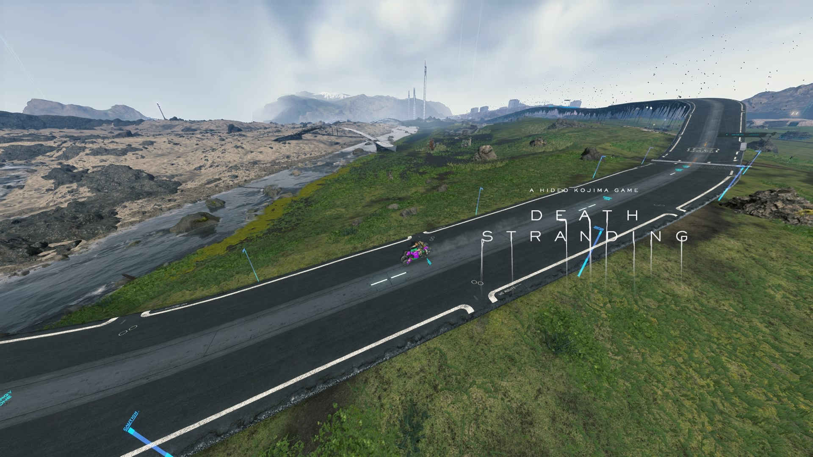

Published in 2019
Developed by: Kojima Studios, Sony™
Cast: Hideo Kojima, Norman Reedus, Guillermo del Toro, Mads Mikkelsen, more...
Awards: BAFTA Games Award 2019, Fun and Serious Games Awards 2019, The Game Awards 2020, others...
This video may have suggestful content.
This video was recorded and edited by AngelGCL.
It was recorded with PS4 share screen recorder.
Edited with ShareFactory.
It was made with the intention of showing the viewer.
what the world of the game consists of.
From the time set in the game world, 49 years prior. The impending DOOM of the world was set in motion. The world was covered in what is known as the time-fall and with monsters known as Beach Things (BT’s). The world of the game is set in a post apocalyptic modern U.S.A. which has been destroyed and decayed due to these phenomenon occurring by the daily. Timefall, as we call the rain in this world, is more like an acid rain but instead of burning through stuff, it will make anything it touches to age quickly. Rendering it useless in a matter of seconds. This is why in this world, there are special materials which can last longer against the timefall and are used everywhere including buildings. Due to the timefalls, people tend to live peacefully inside the underground bunker-cities all over the USA (or whats left of it), now called the UCA (United Cities of America).
Another thing to know about this world is what a “void-out” is. The reason the world is destroyed by these monsters called BT’s, is because:
Now the only people that venture out of the cities are called porters. Mainly because since they move around, they’re tasked with carrying packages to different bunkers around the UCA. This is where our protagonist comes in. Sam Porter Bridges, name of our main hero. A semi-successful porter, known to all as “The Great Deliverer”. Sam, as well as other characters, is able to sense the BTs and has a deep connection to the Beaches. Beaches are the representation of Limbo and is where souls of the dead are sent. It is also where the BTs originate from. Sam, being a porter, is tasked to deliver medicine to the current president of the UCA which turns out to be his own mother. After talking with her and some other incidents, he is then tasked with connecting all of the bunkers and bunker-cities through out the UCA, to a chiral-network. A network system that can withstand the timefall and BT activity. All of this to save his sister who is supposedly being held hostage by a terrorist group that wants to let the world be destroyed. As Sam and all the members of the UCA, work together to save his sister, we uncover the truth about everything. BTs, BBs, the beaches, Sam himself, everything.
First off, is my cargo. This is very important for survival. I will tell you what my cargo was by the end of the story.
The cargo I had by the end of the game was like this, mostly because I took a lot of time getting materials for the roads before engaging in the actual story. Next is the way I played the game. It'll be like a list of guidelines but thats to make it easier to read.
I will have to mention that I had 70 hours of game time accumulated when I finished the story. This is because I took my sweet time constructing the main roads connecting the bunker-cities in the game. I did this because it made it much more easier to go from one place to the other. The roads in the game are a very valuable asset. They have a weak generator included in them which impede the battery of your vehicle from draining. Roads are also made to go through spots where the BTs do not appear or go through. Even when it is raining and infested with BTs, they do not reach the roads so you're defnitely safe inside the roads. Not to boast or anything, but in the server where I am connected to, I built near 70% of the roads. The rest was already constructed by another player.
STILL!!!! The best way to play this game is to take it easy and enjoy it. There's no need to rush nor is there anything to be scared of. I played this game blasting my way through monsters and tying up MULEs and driving through all the terrains making my own roads to get through places the safest and laziest ways possible. Also, I recommend that you listen to the music from the game. If you like relaxing music like I do, it is perfect for you.
THANK YOU FOR READING THIS POST AND I HOPE TO SEE YOU IN ANY OTHER POST I MAKE! IT'S GETTING LATE SO I BID YOU FAREWELL. ADIOU!!!